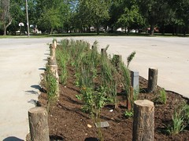
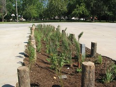
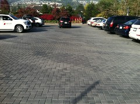
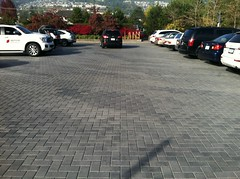
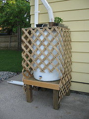
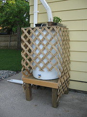
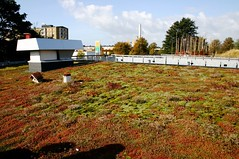
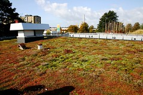

Green Infrastructure
focuses on building in ways that work with nature and often mimic the processes of our planet. Examples of GI include a broad variety of nature forward systems that can assist in flood prevention, excess heat, air quality, water quality and soil quality.
Rain Gardens
Rain Gardens assist in collecting runoff water after storms. They are designated areas where water is funneled into the ground to be absorbed by plant life or infiltrate into the ground cleanly. This reduces the amount of water generated during storms.

Rain Gardens assist in collecting runoff water after storms. They are designated areas where water is funneled into the ground to be absorbed by plant life or infiltrate into the ground cleanly. This reduces the amount of water generated during storms.

Permeable Pavement
Permeable Pavement prevents rainwater from collecting and pooling unlike traditional pavements. They allow for water to reach the dirt underneath and infiltrate into the ground cleanly.

Permeable Pavement prevents rainwater from collecting and pooling unlike traditional pavements. They allow for water to reach the dirt underneath and infiltrate into the ground cleanly.

Rain Barrels
Rain barrels collect undrinkable rainwater that normally would end up in sewer systems. They lower the amount of runoff water that can be polluted and provide a good source of water.

Rain barrels collect undrinkable rainwater that normally would end up in sewer systems. They lower the amount of runoff water that can be polluted and provide a good source of water.

Green Roofs
Green roofs are covered in vegetation and provide buildings with reduced temperatures. They utilize rainwater that would normally become runoff water and assist in reducing the heat island effects of cities.

Green roofs are covered in vegetation and provide buildings with reduced temperatures. They utilize rainwater that would normally become runoff water and assist in reducing the heat island effects of cities.
